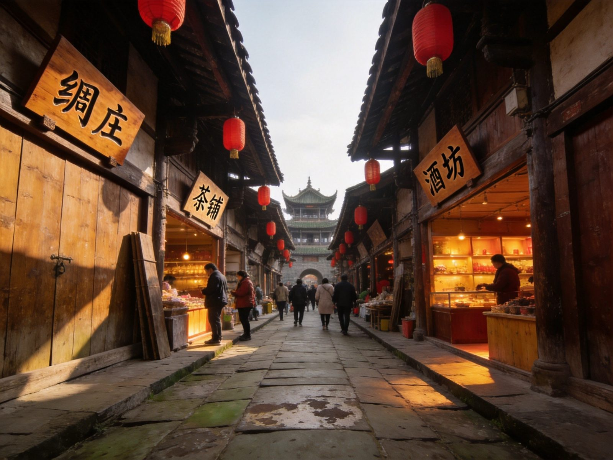

🏮 阆中古城 · LANGZHONG ANCIENT CITY
阆中古城全攻略
与丽江、平遥、徽州并列的中国四大古城，被《国家地理》盖章「阆苑仙境」。嘉陵江 U 形环抱、三面环水，城中 1.5 平方公里青瓦灰墙的川北民居仍保留着以中天楼为中心的「天心十道」棋盘布局。三国文化（张飞在此镇守七年）、科举文化（清代四川贡院全国保存最完整开考处）在此交叠。古城街巷免费、110 元一票通 3 天有效超划算，高铁直达。本文含 1 日/2 日双方案、张飞庙贡院、交通住宿、美食醋泡脚、预算避坑全讲清。
📍 目的地：四川南充 · 阆中市
👥 1–6 人自由行
⏱️ 1 日 / 2 日 双方案
💰 街巷免费 · 一票通110
🏮古城 1 日 · 精华版
核心策略：从中天楼登高俯瞰「天心十道」棋盘街巷，再依次打卡张飞庙、贡院、川北道署，把三国与科举的一口气看完。
👥 1–3 人适配：古城不大、全靠步行，1 日精华能把核心小景点+街巷逛吃都拿下；买 110 元一票通比单买划算得多。
🗺️ 行程安排
-
上午 · 中天楼 → 华光楼登高
🏯 中天楼（古城几何中心）🌉 华光楼（顶层木窗拍古城招牌机位）
💡 站在中天楼顶向下看棋盘街巷、远眺三面环绕的嘉陵江，是理解阆中「阆苑仙境」布局的最佳角度。
-
中午 · 汉桓侯祠（张飞庙）
🈴 张飞镇守七年的祠堂+古柏
💡 民间说法「头葬云阳、身葬阆中」；蹭个讲解会知道张飞并非莽汉，其书法造诣也很高。
-
下午 · 清代四川贡院 + 川北道署
📚 贡院（全国保存最完整的科举考棚之一）🏛️ 川北道署（古代官署）
💡 坐在清代考棚里感受「熬人的安静」是阆中贡院最妙的体验；两个点相距不远，步行顺路。
-
傍晚 · 华光楼码头看日落江景
🌅 嘉陵江畔等天黑亮灯
💡 傍晚一层江面亮灯、城楼灯火相映，是阆中最浪漫的时刻；泡个保宁醋脚再返程，舒服收尾。
🌙古城 2 日 · 慢游版
核心策略：第一天逛透古城核心，第二天上锦屏山看全景+嘉陵江细赏，节奏更松弛的「慢逛」版。
👥 深度体验适配：愿意在古城里住一晚，看清晨无人的街巷·傍晚亮灯的江景，才能完整捕捉「阆苑仙境」的氛围。
🗺️ 行程安排
-
DAY 1 · 古城核心一整天
🏯 中天楼/华光楼登高🈴 张飞庙
📚 贡院+川北道署🏘️ 街巷漫游（保宁醋/张飞牛肉）
💡 住古城内老宅改造的院落民宿，晚上逛南街夜市、看张飞巡城表演（免费），体验本地夜生活。
-
DAY 2 · 锦屏山 → 嘉陵江 → 返程
⛰️ 锦屏山看古城与嘉陵江全景🌉 乘船/沿江漫步
🍜 吃牛肉面/醋泡脚后返程
💡 锦屏山门票约10元、是俯瞰古城与U形江弯的最佳高度；下午从高铁站返成都不到 2 小时。
⭐阆中古城核心景点 · 单独详览
把最具辨识度的几个点单独拎出来说清楚——值不值得去、怎么玩、联票怎么买。

中天楼 · 古城中心
地标
中天楼 · 俯瞰天心十道
雄踞古城几何中心的三层古楼，四条主街从中天楼向四角辐射，构成「天心十道」经典棋盘布局。登楼可俯瞰整片青瓦灰墙的川北民居与蜿蜒嘉陵江，是理解阆中风水格局的最高点。
👍 必去理由：古城第一登高点，也是认路坐标——「迷路就找中天楼」。旺季可错峰早到，顶层开阔出片好。
张飞庙 · 三国文化地标
三国
汉桓侯祠（张飞庙）· 张飞镇守七年
为纪念在阆中镇守七年的蜀汉名将张飞而建的祠堂，庙内保存张飞墓与清代建筑，庄严肃穆。民间传说「头葬云阳、身葬阆中」，这里的古柏与塑像承载着浓厚三国文化。
👍 必去理由：三国迷必打卡。祠内古柏清幽，蹭团听讲解能了解张飞守城治水的另一面，还可看民俗表演。
清代贡院 · 科举圣地
科举
清代四川贡院 · 全国保存最完整考棚
清代四川省级科举考场遗址，整个贡院建筑与布局保存完好，是今天中国唯一可完整看见科举考棚布局的地方。曾在此举行四次四川乡试，走出过 116 名进士、4 名状元、17 名武状元。
👍 必去理由：阆中最具仪式感的景点。坐进古色考棚、透过窄窗漏进的光线，想象古人连考三日的「熬人安静」。
华光楼 · 临江古楼
地标
华光楼 · 拍嘉陵江最佳机位
临江而立的古老城楼，登上顶层木窗可俯瞰嘉陵江 U 形弯道与古城全景，是拍阆中江景与城貌的最佳机位之一。傍晚亮灯后，江面与楼影相映，格外动人。
👍 必去理由：摄影打卡必上。傍晚时分到华光楼码头，看日落、等江面亮灯，是阆中「阆苑仙境」氛围感最强的瞬间。
锦屏山 · 阆苑仙境全貌
观景
锦屏山 · 俯瞰古城的后花园
位于嘉陵江南岸的山峦，是俯瞰阆中古城与「U 形江弯」的最佳高度。山顶可完整看到三面环水的阆中城呈半岛状卧于江心，配合对岸青瓦屋脊，就是「阆苑仙境」的具体形象。
👍 必去理由：想看清古城全貌必上。门票约10元，步道清幽，适合2日游第二天上午登高收尾。
🚗怎么去：高铁 vs 自驾 vs 大巴 vs 飞机
阆中距成都约280公里，高铁开通后进古城已相当便捷。
阆中古城高铁/自驾/大巴/飞机四种交通方式对比
| 方式 | 🚄 高铁 | 🚗 自驾 | 🚌 大巴 | ✈️ 飞机 |
|---|
| 时长/成本 |
成都东/南至阆中站约 1.5–2h，出站公交/打车约 10–15 分钟进古城 |
成都经成巴高速至阆中约 280km、3.5–4h |
成都茶店子等车站直达，约 4–5h |
就近南充/绵阳机场转高铁或租车 |
|---|
| 适合人群 |
✔ 2026 年最推荐：快、直达、进城方便 |
自驾党、顺路游光雾山/剑门关 |
预算型长途，时间充裕 |
远距离直达，转乘较多 |
|---|
| 注意 |
出站乘 10 路公交 2 元/打车约15元 直达古城 |
停「状元坊停车场」约 10 元/天，别停路边私人车位易溢价 |
班次相对固定，需按时刻表 |
南充机场离古城较远，转乘耗时 |
|---|
| 💡 一句话建议：首选 高铁——成都出发不到 2 小时直达阆中站，出站公交/短途打车几分钟就到古城，省心省力。 |
|---|
🎫 联票：一票通 110 元（线上 100），3 天有效，含张飞庙、贡院、川北道署、文庙+中天楼/华光楼，比单买省约 70 元；学生/老人半价；穿正规汉服进古城一票通有折扣。注意：古城街巷本身免费，别在入口被拉着买「古城门票」。
🏨住宿推荐
古城内老宅院落民宿最具氛围、古城区口江景酒店进出方便，三档供参考（2 人房计）。
经济型
古城内经济客栈
约 100–220 元/晚 · 人均 50–110
木结构老宅改造、青瓦院落，性价比高、逛吃方便。
中端舒适
院落主题民宿
约 250–480 元/晚 · 人均 125–240
庭院天井、布置雅致，适合喜欢沉浸式古城生活的情侣与家庭。
江景高端
嘉陵江景酒店
约 400–1000 元/晚 · 人均 200–500
推窗见江、设施更现代，旺季/节假日涨幅大，建议提前一周以上订。
🍜阆中古城必吃清单
阆中是蜀中美食重镇，张飞牛肉、保宁醋全国有名，街巷小吃也非常地道。
1阆中牛肉面（热臊子凉面）别处少见的组合 · 招牌早餐
约 8–15 元
4油茶馓子 / 锅盔灌凉粉川北特色小吃 · 早餐/午点
约 8–20 元
💰预算对比（人均）
含 1–3 人出行说明；区间为保守–宽松，实际以淡旺季与选择为准。
阆中古城1日与2日方案人均预算对比
| 项目 | 古城1日版 | 古城2日慢游 |
|---|
| 大交通（成都往返人均） | 约 120–200 | 约 120–200 |
|---|
| 一票通 | 110 | 110（+锦屏山约10） |
|---|
| 住宿 | —（当日往返可选） | 1 晚 100–480 |
|---|
| 餐饮 | 约 60–120 | 约 120–240 |
|---|
| 城内交通/杂费 | 约 20–50 | 约 30–80 |
|---|
| 合计 · 人均 | 约 310–480 | 约 500–900 |
|---|
💡 省法：只逛街巷则完全免费；一票通比单买省约70元；学生/老人半价；穿汉服一票通另有折扣；古城内小吃比城中心贵 2–3 元，久住可去桑公街/1227 广场吃实惠餐。
🧭避坑 & 实用贴士
- 别在入口乱买票：古城街巷免费，入口喊「买古城门票」的是让你买内部小景点票；要买就买官方「一票通」，别买重。
- 联票3天有效：一票通 110 元（线上100）含张飞庙+贡院+川北道署+文庙+中天/华光楼，3天有效，不必一天赶完。
- 暑期延时闭园：每年7–8月高温季核心景点常延时开放至20:00（见当年公告），建议19:30前入园；非暑期各景点17:30–18:30陆续关门。
- 旺季提前订房：古城民宿节假日价格常上浮50%，建议提前一周以上订，早点到挑院景房。
- 停车别图便宜：自驾停「状元坊停车场」约10元/天，别停路边私人车位，易溢价。
- 穿汉服/运动鞋：古城青石板路适合汉服拍照，但穿双舒服的鞋，走一天不累脚。